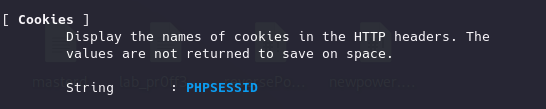

Identificando tecnologías
ESCANEAR QUE TIPO DE APLICACIONES, TECNOLOGÍAS, SERVIDOR, LENGUAJE PROGRAMACIÓN DETRÁS DE CADA SUBDOMINIO
.Para poder realizar este análisis a “gran escala” necesitamos de:
WhatWeb:
https://github.com/urbanadventurer/WhatWeb
Escaner de aplicaciones web que analiza un dominio o subdominio y analiza sus tecnologías, librerías, versiones, direcciones de correo, errores sql, id de cuentas, wp-content.
Vamos a analizar una web de la maquina VPLE
Para listar los plugins.
whatweb -l
No suele generar mucho tráfico de red y tiene opciones para controlarlo.
whatweb -v http://192.168.20.133:8080


Va dando información mediante los plugins, etc.
Si usamos esta aplicación, al analizar las peticiones y las cabeceras de los paquetes no debería haber problema a la hora de usarlo contra una web con balanceador de carga.
El balanceador se encargar de repartir las cargas de peticiones entre varios servidores o regiones.
Diferentes modos:

- →
→ WebAnalyze:
https://github.com/rverton/webanalyze
Es algo más sencilla y rápida que WhatWeb, menos conocida pero da menos detalle.
go install -v github.com/rverton/webanalyze/cmd/webanalyze@latest
webanalyze -update